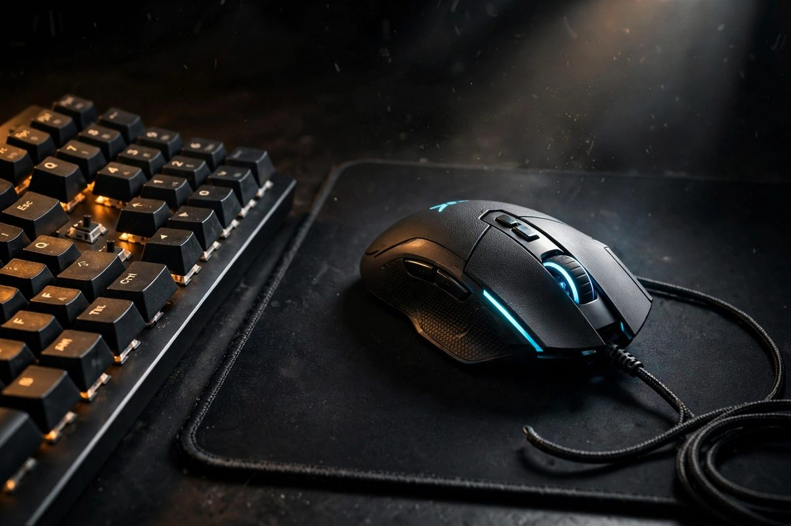

Best Mouse Settings for PUBG on PC: DPI, Sensitivity & Polling Rate

Your mouse settings decide how fast you turn, how steady your aim is, and how well you control recoil in PUBG. The right setup will not make you a pro overnight, but the wrong one holds your aim back in every fight.
Why Your Mouse Settings Matter in PUBG
PUBG fights happen at every distance: one moment you are clearing a building at close range, the next you are tracking a moving target across an open field with a 4x scope. Your mouse setup has to work for both. Too high, and long-range shots get wobbly; too low, and you cannot turn fast enough when an enemy appears behind you. The goal is balance: quick enough for close-quarters reactions, steady enough for precise shots. Good settings also reduce wrist strain during long sessions, because you stop making constant tiny corrections and start moving with smooth, confident strokes.
What DPI Should You Use?
DPI, or dots per inch, is how sensitive your mouse hardware is. A higher DPI means the cursor moves further for the same hand movement. For PUBG, most experienced players use a DPI between 400 and 800. The most common choice is 800 DPI, because it is a good middle ground that works well on both 1080p and 1440p monitors. Very high DPI values such as 3200 or 16000 do not make you more accurate: they usually make your aim worse, because tiny hand tremors become large movements on screen. A lower DPI gives finer control, and you make up the difference by moving your arm more. Set your DPI to 800 and leave it there. Changing DPI mid-match ruins muscle memory, so pick one value and keep it for a few weeks.
In-Game Sensitivity Settings
PUBG lets you set a separate sensitivity for general aiming, each scope level, and vehicles. This is one of the most useful features in the game, because a 1x red dot and an 8x scope need very different speeds. Start with the values below, then adjust them in training mode until they feel natural. Keep the vertical sensitivity multiplier at 1.00: raising it makes recoil control harder without any real benefit.
| Setting | Recommended Value (at 800 DPI) | Notes |
|---|---|---|
| General Sensitivity | 38–45 | Hip-fire and movement speed |
| Targeting Sensitivity | 35–40 | Aiming down sights |
| Scope 2x | 35–40 | Close to mid-range |
| Scope 4x | 30–35 | Mid-range spraying |
| Scope 6x / 8x | 25–30 | Long-range shots |
| Vertical Sensitivity Multiplier | 1.00 | Keep at default |
Notice how sensitivity drops as zoom rises: the more zoomed in you are, the smaller your mouse movements should be. If your 4x sprays drift off target, lower that value by two or three points until the crosshair stays put.
Polling Rate: 500 Hz or 1000 Hz?
Polling rate is how often your mouse reports its position to your PC. At 500 Hz it reports 500 times per second, and at 1000 Hz it reports 1000 times per second. For PUBG, 1000 Hz is the right choice on any modern PC. It gives slightly smoother and more responsive tracking, and the extra CPU usage is tiny on today's processors. Some very old or low-end PCs can show a small performance cost at 1000 Hz, so if you play on a weak laptop, 500 Hz is a reasonable fallback that still feels fine. Change it in your mouse software, such as Logitech G Hub or Razer Synapse, then forget it.
Turn Off Mouse Acceleration
Mouse acceleration, called "Enhance pointer precision" in Windows, changes how far your cursor moves based on how fast you move the mouse. That sounds helpful, but it destroys consistency: the same hand movement can move your aim a different distance depending on speed, which makes it impossible to build reliable muscle memory. Turn it off in Windows by opening Settings, going to Mouse, then Additional mouse options, then the Pointer Options tab, and unchecking "Enhance pointer precision". PUBG mostly reads raw mouse input directly, but turning acceleration off everywhere keeps your aim the same on the desktop and in the game. While you are there, set your Windows pointer speed to the middle notch, which is the neutral 6/11 position.
How to Find Your Own Perfect Settings
No guide can hand you perfect settings, because hand size, desk space, and play style all differ. Use the values in this guide as a starting point, then test them properly. Load into the training mode, pick up your favourite rifle, and practise three things: flicking between two targets, tracking a moving target, and spraying a wall at 30 metres. If you keep overshooting your flicks, lower your sensitivity by two points. If you keep stopping short, raise it by two. Make one small change at a time and give yourself at least three or four matches to adjust before changing anything again. Constantly switching settings is the most common mistake players make, and it resets your muscle memory every time. A large mouse pad helps too: a desk mat of at least 450 by 400 millimetres gives your arm the room a lower sensitivity needs. Once your settings feel comfortable, leave them alone and let practice do the rest.
Frequently Asked Questions
What is the best DPI for PUBG on PC?
800 DPI is the best starting point for most players. It gives fine control at long range while still letting you turn quickly in close fights. Some players prefer 400 DPI for even steadier aim, but that needs more desk space. Avoid very high DPI values above 1600, as they make small hand movements too jumpy.
Should I use 500 Hz or 1000 Hz polling rate?
Use 1000 Hz if your PC is reasonably modern. It gives smoother, more responsive mouse tracking with almost no performance cost. If you play on a very weak or old PC and notice stutter, 500 Hz is a fine alternative and most players would not feel the difference.
Why does my aim feel different every time I play?
The usual cause is changing settings too often, or mouse acceleration being turned on in Windows. Set one DPI and one sensitivity, turn off "Enhance pointer precision", and keep the same settings for at least two weeks. Consistent settings are what build the muscle memory that makes aim feel automatic.
Download PUBG Now
Get the official game from the official stores. PUBG on PC is free to play on Steam; PUBG Mobile is available on Google Play and the App Store.